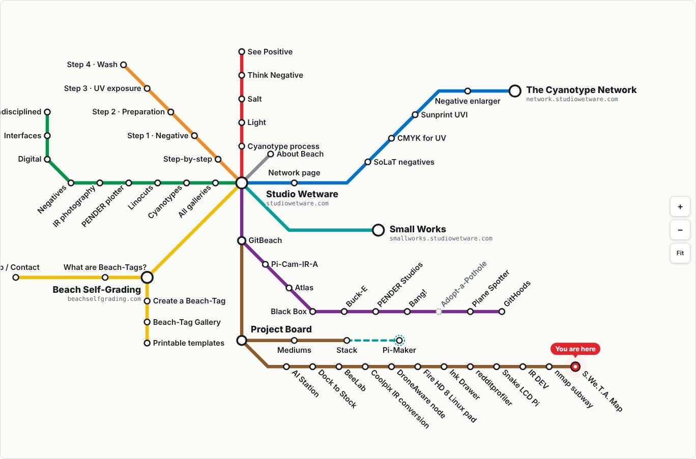

Studio Wetware Transit Authority (S.We.T.A) Map
Subway-style map of every page across studiowetware.com, The Cyanotype Network, Small Works, Beach Self-Grading and the project board

Has releasesSVGJavaScriptsitemaptransit mapGitHub Pages
2 updates from Oct 2026 to Oct 2026
Mediums
Code spectrum
Hardware 0, System / network 1, Data / tools 4, Web / platform 9
Timeline
Site crawl and first map
The pages of studiowetware.com, The Cyanotype Network, Small Works, Beach Self-Grading and the project board were crawled and drawn as a transit map. Each site section is a line, each page is a stop, and the four main sites are hub stations. Projects that have a page on more than one site share one stop where their lines meet.
Stops are hand placed on 45 and 90 degree tracks. Tapping a stop opens a window with the page's featured image and a link to the page. A Stations list shows every stop by site, and a second list shows the pages that have no featured image.
Live on GitHub Pages
The map is a single HTML file published from the sitemap repository with GitHub Pages. It has its own icon, a black roundel in the map's line colors.
On phones the map switches to a portrait layout, opens zoomed in on the Studio Wetware hub, and shows a small overview map for moving around. Stop details slide up from the bottom, with buttons and swipes to move to the next or previous stop on a line. Picking a line zooms the map to it and lists its stops in order. Labels stay the same size at every zoom level and are hidden when they would overlap.